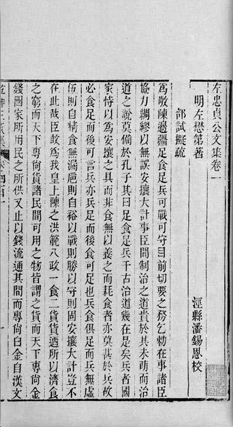

九
出使北京的使团，倒是很快组成了。七月初五，宣布使团由兵部右侍郎兼都察院右佥都御史左懋第领衔，马绍愉、陈洪范为副使。临行，左懋第辞阙，痛陈：
臣所望者恢复，而近日朝政似少恢复之气。望陛下时时以天下为心，以先帝之仇、北京之耻为心……抚江上之黎氓，而即念河北、山东之赤子……臣更望皇上命诸臣时时以整顿士马为事，勿以臣此行为必成；即成矣，勿以此成为可恃。必能渡河而战，而后能扼河而守，而后能拱护南都于万全。[43]
分明已抱诀别之意，字字泣血，历历可见。明朝实不乏这样的忠正之臣，可惜，他们都不能挽狂澜于既倒。那种整体的隳坏，正如《左传》所言：“疾不可为也，在肓之上，膏之下，攻之不可，达之不及，药不至焉，不可为也。”[44]
明朝似乎觉得，向北京派出使团，便万事大吉，重新变得无所事事，此后我们只看到一些零星记载，如七月十七日将出使名义从“款北”改为“酬北”（“款”有藐视之意）[45]，八月初四补充决定“优恤”吴三桂之父吴襄、赠其“蓟国公”[46]，九月初二“史可法请进兵恢复，诏以‘北使方行，大兵继之未便’。”[47]之外再无动静，哪怕屡有塘报报告“和议未成”[48]，包括十二月中旬使团成员陈洪范只身南归、从而确知和谈失败[49]，南京也都没有任何应对。

《左忠贞公文集》书影。
左懋第，山东莱阳人，崇祯七年进士，时任右佥都御史兼应（天）徽（州）巡抚。朝议组建使团赴北京与清和谈，无人应命，左懋第主动进奏，要求北上。后遭满清扣押，不屈被害，获誉“明末文天祥”。
李自成像，作者佚名。
此绘像体现了当代英雄主义画风，从人物姿态、表情、目光、面容等看，应为“文革”时期作品，其手法与特征曾广泛见于当时工农兵形象宣传画。以之与明人史著中李自成相对照，历史反差感极强。
虽然朝廷状态如此，史可法却没有放弃。他权当先前建议已获默许（确实也没有遭到否定），而自行准备。从所见材料看，南京主事者从未对他的准备工作给予任何实质的支持，但他一直都在积极筹备，纵然只是孤旅一支，纵然只是象征性地表示明朝采取了行动，也要将它变成事实。八月十八日，他向朝廷报告“将北伐”，“命申纪律”[50]，九月初二，请求正式进军，但被以等待和谈结果为由，下令暂缓。
以后，史可法曾多次敦促。九月二十六日，奏言：
各镇兵久驻江北，皆待饷不进。听胡骑南来索钱粮户口册报，后遂为胡土。我争之非易，虚延日月，贻误封疆，罪在于臣。[51]
眼见一河之隔，满清大张旗鼓展开接管，自己却只能干瞪眼。十一月十二日，他愤而写道：
痛自三月以来至于今日，陵庙荒芜，山河鼎沸，大仇数月，一兵未加。[52]
“一兵未加”四个字，道尽悲哀。《史忠正公集》还载有《自劾师久无功疏》，用强烈自责的方式，揭露朝事之空洞虚无：
臣本无才，谬膺讨贼，亦谓猛拌一死，力殄逆氛，庶仰酬先帝之恩，光赞中兴之治。岂知人情未协，时势日艰，自旧岁五月出师，左拮右据，前疐后跋……臣是以仰天拊心，泣涕出血，精神日暓，忧郁日沈，疾病日加，深叹于寸丝之莫酬，而万死之莫赎也。[53]
此疏上于何日，未得其详，而据疏中“今受命十月，一旅未西”来看，时在乙酉三月（1645年4月）。这时，清兵已渡过黄河，“破蒙山，逼归、徐，江南震恐”[54]。面此局势，史可法抚思所来，内心岂不创巨痛深。《史忠正公集》所载最后一道奏疏，作于左良玉军变后，其云：
顷报北兵……臣提兵赴泗，正思联络凤泗，控守淮南，不意复有上游之警（指左军之变），调臣赴庐皖上游。臣伏思上游之事，发难无名，沿江重兵，自足相抵，其势未必即东下，而北兵南来，则历历有据，声势震荡，远近惶骇。万一长淮不守，直抵江上，沿江一带，无一坚城，其谁为御之？不知士英何以受蔽至此！[55]
这道奏章发出不久，扬州告破，史可法罹难。纵观前后全过程，明朝可谓未用史可法一言，而史可法则是眼睁睁看着国家怎样一步一步毫无作为地走向灭亡。《南疆逸史》为之概述：“可法受事数月，疏非数十上，皆中兴大故，言极痛愤，草成辄呜咽不自胜，幕下士比为饮泣。”[56]